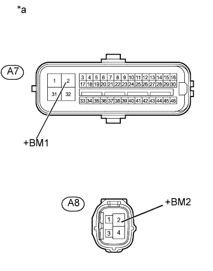

DTC C1253 Pump Motor Relay |
| Код DTC | Условие обнаружения DTC | Неисправный участок |
| C1253 | Существует неисправность в цепи системы электродвигателя (входной цепи электродвигателя). |
|
| 1.ВЫПОЛНИТЕ АКТИВНУЮ ДИАГНОСТИКУ С ПОМОЩЬЮ ПОРТАТИВНОГО ДИАГНОСТИЧЕСКОГО ПРИБОРА (РЕЛЕ ЭЛЕКТРОДВИГАТЕЛЯ) |
Выключите зажигание.
Подсоедините портативный диагностический прибор к DLC3.
Включите зажигание (IG).
Включите портативный диагностический прибор.
Запустите двигатель.
Войдите в следующие меню: Chassis / ABS/VSC/TRC / Active Test.
| Информация на дисплее прибора | Испытываемое устройство | Диапазон регулирования | Замечание по диагностике |
| Motor Relay | Реле электродвигателя | Включение / выключение реле | Слышен звук работы электродвигателя. |
Проверьте, слышен ли звук работы электродвигателя, управляя им с помощью портативного диагностического прибора.
|
| ||||
| OK | |
| 2.СНОВА ПРОВЕРЬТЕ DTC |
Удалите коды DTC (Нажмите здесь).
Выключите зажигание.
Нажмите на педаль тормоза более 40 раз.
Включите зажигание (IG).
Подождите, пока электродвигатель насоса остановится.
Несколько раз нажмите на педаль тормоза, пока электродвигатель насоса не включится. (Процедура A)
Подождите, пока насос остановится. (Процедура B)
Повторите указанные выше операции (процедуры A и B) еще 3 раза.
Проверьте, выводится ли тот же DTC (Нажмите здесь).
| Результат | Следующий шаг |
| DTC не выводится | А |
| DTC выводятся (для моделей с левосторонним рулевым управлением) | B |
| DTC выводятся (для моделей с правосторонним рулевым управлением) | C |
|
| ||||
|
| ||||
| А | ||
| ||
| 3.ПРОВЕРЬТЕ НАПРЯЖЕНИЕ НА КОНТАКТЕ (+BM1, +BM2) |
Отсоедините разъемы A7 и A8 ЭБУ системы противоскольжения.
|  |
Измерьте напряжение в соответствии со значениями, приведенными в таблице.
| Контакты для подключения диагностического прибора | Режим | Заданные условия |
| A7-2 (+BM1) - масса | Всегда | 11-14 В |
| A8-2 (+BM2) - масса | Всегда | 11-14 В |
| *a | Вид спереди разъема со стороны жгута проводов: (к ЭБУ системы противоскольжения) |
|
| ||||
| OK | |
| 4.ПРОВЕРЬТЕ ЖГУТ ПРОВОДОВ И РАЗЪЕМ (КОНТАКТЫ GND1, GND2 И GND3) |
Отсоедините разъемы A7 и A8 ЭБУ системы противоскольжения.
Измерьте сопротивление в соответствии со значениями, приведенными в таблице ниже.
| Контакты для подключения диагностического прибора | Условие | Заданные условия |
| A7-1 (GND1) - масса | Всегда | Менее 1 Ом |
| A7-32 (GND2) - масса | Всегда | Менее 1 Ом |
| A8-4 (GND3) - масса | Всегда | Менее 1 Ом |
|
| ||||
| OK | |
| 5.СНОВА ПРОВЕРЬТЕ DTC |
Сбросьте коды DTC (Нажмите здесь).
Выключите зажигание.
Нажмите на педаль тормоза более 40 раз.
Включите зажигание (IG).
Подождите, пока электродвигатель насоса остановится.
Несколько раз нажмите на педаль тормоза, пока электродвигатель насоса не включится. (Процедура A)
Подождите, пока насос остановится. (Процедура B)
Повторите указанные выше операции (процедуры A и B) еще 3 раза.
Проверьте, выводится ли тот же DTC (Нажмите здесь).
| Результат | Следующий шаг |
| DTC не выводится | А |
| DTC выводятся (для моделей с левосторонним рулевым управлением) | B |
| DTC выводятся (для моделей с правосторонним рулевым управлением) | C |
|
| ||||
|
| ||||
| А | ||
| ||